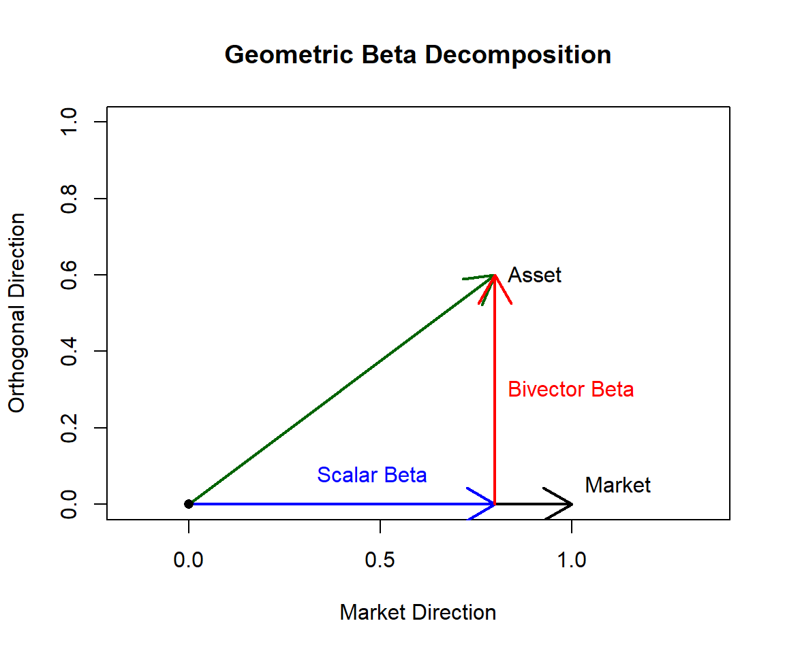
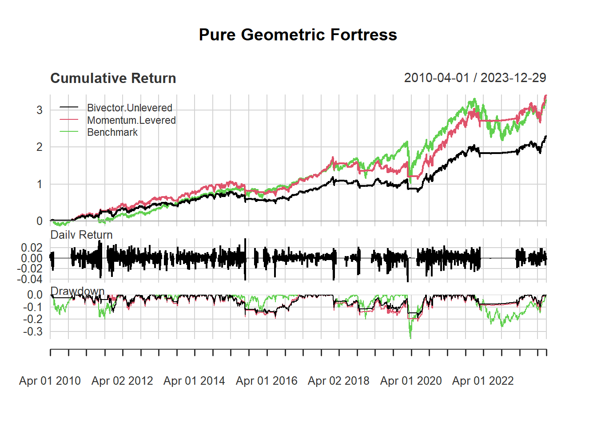

Traditional beta collapses asset–market relationships into a single scalar. This obscures how an asset differs from the market.
Geometric beta decomposes asset behavior into:
This document formalizes the mathematics and provides geometric intuition.
Let returns over a rolling window of \(N\) days be represented as vectors:
\[ \mathbf{m} = (m_1, m_2, \dots, m_N) \in \mathbb{R}^N \]
\[ \mathbf{a} = (a_1, a_2, \dots, a_N) \in \mathbb{R}^N \]
Each coordinate corresponds to time, not a factor. This is geometry in trajectory space.
The scalar beta is the projection of the asset vector onto the market vector:
\[ \beta_{\text{scalar}} = \frac{\mathbf{a} \cdot \mathbf{m}}{\mathbf{m} \cdot \mathbf{m}} \]
Scalar beta is the shadow of the asset vector on the market axis.
If: \[ \mathbf{a} = k \mathbf{m} \]
then: - \(\beta_{\text{scalar}} = k\) - Asset is a pure market clone
Remove the market-aligned component:
\[ \mathbf{r} = \mathbf{a} - \beta_{\text{scalar}} \mathbf{m} \]
Normalize the magnitude of the rejection:
\[ \beta_{\text{bivector}} = \frac{\|\mathbf{r}\|}{\|\mathbf{m}\|} \]
If: \[ \mathbf{a} \cdot \mathbf{m} = 0 \]
then: - \(\beta_{\text{scalar}} = 0\) - Asset is purely orthogonal to the market
The exterior (wedge) product:
\[ \mathbf{a} \wedge \mathbf{m} \]
represents the oriented area spanned by the two vectors.
Magnitude:
\[ \|\mathbf{a} \wedge \mathbf{m}\| = \sqrt{(\mathbf{a}\cdot\mathbf{a})(\mathbf{m}\cdot\mathbf{m}) - (\mathbf{a}\cdot\mathbf{m})^2} \]
To build intuition, we visualize the asset–market relationship in two dimensions. The horizontal axis represents the market direction and the vertical axis represents the orthogonal (non-market) direction.
This is a geometric abstraction — the real vectors live in high-dimensional return space, but the relationships are identical.
# Define simple 2D vectors
market <- c(1, 0)
asset <- c(0.8, 0.6)
# Scalar beta (projection)
beta_scalar <- sum(asset * market) / sum(market * market)
projection <- beta_scalar * market
# Rejection (bivector component)
rejection <- asset - projection
# Plot setup
plot(
c(0, 1.2),
c(0, 1.0),
type = "n",
xlab = "Market Direction",
ylab = "Orthogonal Direction",
main = "Geometric Beta Decomposition",
asp = 1
)
# Market vector
arrows(0, 0, market[1], market[2], lwd = 2, col = "black")
text(1, 0.05, "Market", pos = 4)
# Asset vector
arrows(0, 0, asset[1], asset[2], lwd = 2, col = "darkgreen")
text(asset[1], asset[2], "Asset", pos = 4)
# Projection (scalar beta)
arrows(0, 0, projection[1], projection[2], lwd = 2, col = "blue")
text(projection[1] * .6, 0.025, "Scalar Beta", col = "blue", pos = 3)
# Rejection (bivector beta)
arrows(
projection[1],
projection[2],
asset[1],
asset[2],
lwd = 2,
col = "red"
)
text(
projection[1] + rejection[1] / 2,
projection[2] + rejection[2] / 2,
"Bivector Beta",
col = "red",
pos = 4
)
# Origin
points(0, 0, pch = 16)
The rejection-based bivector beta satisfies:
\[ \|\mathbf{a} \wedge \mathbf{m}\| = \|\mathbf{m}\|^2 \cdot \beta_{\text{bivector}} \]
Thus:
| PCA | Geometric Beta |
|---|---|
| Rotates coordinate system | Fixes market direction |
| Variance-based | Orientation-based |
| Symmetric | Asymmetric (market-anchored) |
| Unstable in crises | Stable under regime stress |
PCA asks: > “What directions explain variance?”
Geometric beta asks: > “How much does this asset escape the market direction?”
Before correlation collapses:
Correlation reacts after geometry collapses. Bivector beta reacts during geometric divergence.
Geometric beta decomposes asset risk into market-aligned motion and orthogonal structural motion, enabling regime-aware diversification based on geometry rather than correlation.
Modern portfolio theory failed during several episodes of significant drawdowns as diversifiaction collapsed and all assets within the portfolio went sour. The most recent event was the drawdown in 2022, the “Everything Crash”. The reason is that risk metrics—correlation and traditional beta’s are geometrically incomplete. When inflation surged and interest rates reset, both equities and bonds declined simultaneously, revealing that conventional diversification relied on flat statistics that collapse under regime stress.
This framework replaces correlation-based thinking with Geometric Investing, which treats markets as high-dimensional geometric objects rather than collections of pairwise relationships. Returns over time are represented as vectors, and risk is analyzed through orientation, area, and volume instead of variance alone.
The approach is built on three geometric sensors:
Combined, these sensors form the Geometric Beta Portfolio, which dynamically rotates between equities, defensive assets, and cash based purely on geometric structure—without relying on traditional technical indicators.
Empirical results since 2010 show that the strategy: - Fully participates in bull markets - Rapidly de-risks during structural collapses (e.g., 2020) - Avoids major drawdowns during correlation crises (e.g., 2022)
The broader implication is that geometry provides a scalable language for risk. Just as flat statistics fail in finance, naive vector operations fail in other high-dimensional systems such as machine learning. Measuring and managing shape rather than averages offers a more robust foundation for complex decision-making.
The backtest below contains two corrections that apply to both variants:
Both variants share the identical geometric core — wedge-volume regime detection (PANIC below the rolling 15th percentile, DEFENSE below the 40th), the 200-day orientation filter, and monthly rebalancing. They differ only in which defensive asset they buy and how much market exposure they take in OFFENSE:
Bivector.Unlevered — the pure geometric
specification.
Momentum.Levered — the return-oriented
specification.
Bivector.Unlevered |
Momentum.Levered |
|
|---|---|---|
| Defensive pick | Largest orthogonal magnitude | Strongest trend |
| Market exposure in OFFENSE | 1.00× | 1.25× |
| CAGR / Sharpe / MaxDD (2010–2023) | 9.1% / 0.77 / 18.7% | 11.4% / 0.82 / 21.9% |
Bivector.Unlevered — advantages: conceptually
pure (every decision is geometric), no leverage, hence no financing
cost, no margin requirements, and the lowest volatility (≈12%) and
drawdown of the three series. Disadvantages: the bivector magnitude
scales with the asset’s own volatility, so it
systematically favors the most volatile diversifier rather than
the most rewarding one — the orientation filter only slowly vetoes a
deteriorating pick. Running at ~12% volatility against a ~17% benchmark,
it cannot keep up with the market in long bull phases despite its higher
Sharpe ratio.
Momentum.Levered — advantages: the defensive
sleeve holds the asset that is actually being paid (≈ +0.6% p.a. from
the pick alone), and the modest OFFENSE leverage converts the strategy’s
Sharpe advantage into absolute return — it beats the buy-and-hold
benchmark while still cutting the maximum drawdown roughly in half.
Crisis protection is untouched because leverage applies only in OFFENSE.
Disadvantages: it mixes a non-geometric ingredient (momentum) into the
framework; it requires a leverage implementation (futures or margin)
with financing-cost risk when short rates rise; and the 1.25× exposure
amplifies whipsaw losses around OFFENSE↔︎BEAR transitions, giving
slightly higher volatility and drawdown.
In short: Bivector.Unlevered is the cleaner
risk-management product, Momentum.Levered the
better total-return product at a still markedly lower risk than
the benchmark.
library(quantmod)
library(zoo)
library(PerformanceAnalytics)
########################################.
####### 1. GEOMETRIC OPERATORS #######
########################################.
calculate_wedge_volume <- function(returns, window = 60) {
vols <- numeric()
dates <- index(returns)[(window + 1):nrow(returns)]
r_val <- coredata(returns)
for (i in seq(window + 1, nrow(r_val))) {
win <- r_val[(i - window):(i - 1), , drop = FALSE]
norms <- apply(win, 2, function(x) sqrt(sum(x^2)))
norms[norms == 0] <- 1e-8
norm_win <- sweep(win, 2, norms, "/")
gram <- t(norm_win) %*% norm_win
vols <- c(vols, sqrt(abs(det(gram))))
}
return(xts(vols, order.by = dates))
}
calculate_geometric_beta <- function(asset_returns, market_returns, window = 60) {
dates <- index(asset_returns)[(window + 1):nrow(asset_returns)]
scalar <- numeric()
bivector <- numeric()
a <- coredata(asset_returns)
m <- coredata(market_returns)
for (i in seq(window + 1, length(a))) {
vec_a <- a[(i - window):(i - 1)]
vec_m <- m[(i - window):(i - 1)]
m_sq <- sum(vec_m^2)
if (m_sq == 0) {
m_sq <- 1e-8
}
sc <- sum(vec_a * vec_m) / m_sq
rej <- vec_a - sc * vec_m
bi <- sqrt(sum(rej^2)) / sqrt(m_sq)
scalar <- c(scalar, sc)
bivector <- c(bivector, bi)
}
return(list(
scalar = xts(scalar, order.by = dates),
bivector = xts(bivector, order.by = dates)
))
}
calculate_bivector_orientation <- function(prices, window = 200) {
return(diff(prices, lag = window) > 0)
}
########################################.
####### 2. STRATEGY EXECUTION ########
########################################.
runGMM <- function(start_date = "2010-01-01", end_date = "2024-01-01") {
sectors <- c("XLK", "XLF", "XLV", "XLE", "XLI", "XLY", "XLP", "XLB", "XLU")
assets <- c("SPY", "TLT", "GLD")
cash <- "SHV"
tickers <- c(sectors, assets, cash)
getSymbols(tickers, from = start_date, to = end_date, auto.assign = TRUE)
prices <- do.call(merge, lapply(tickers, function(t) Ad(get(t))))
colnames(prices) <- tickers
returns <- na.omit(diff(log(prices)))
spy <- returns$SPY
sec_ret <- returns[, sectors]
wedge_vol <- calculate_wedge_volume(sec_ret, 60)
defense_thresh <- rollapply(wedge_vol, 252, quantile, probs = 0.40, fill = NA)
panic_thresh <- rollapply(wedge_vol, 252, quantile, probs = 0.15, fill = NA)
# Build bivector_df via list then merge (empty-xts column assignment fails)
gb_results <- lapply(setNames(assets, assets), function(a) {
calculate_geometric_beta(returns[, a], spy, 60)
})
bivector_df <- do.call(merge, lapply(gb_results, `[[`, "bivector"))
colnames(bivector_df) <- assets
orientations <- do.call(
merge,
lapply(setNames(tickers, tickers), function(t) {
calculate_bivector_orientation(prices[, t], 200)
})
)
colnames(orientations) <- tickers
# 12-1 momentum, used by the improved variant's defensive pick
mom12 <- do.call(
merge,
lapply(setNames(tickers, tickers), function(t) {
diff(log(prices[, t]), lag = 252) - diff(log(prices[, t]), lag = 21)
})
)
colnames(mom12) <- tickers
# Intersect indices without stripping Date class
idx <- index(wedge_vol)[
index(wedge_vol) %in% index(bivector_df) & index(wedge_vol) %in% index(orientations)
]
# Last trading day of each month
monthly <- idx[!duplicated(format(idx, "%Y-%m"), fromLast = TRUE)]
run_variant <- function(pick = c("bivector", "momentum"), offense_lev = 1) {
pick <- match.arg(pick)
holdings <- c(SPY = 1)
history <- data.frame(date = as.Date(character()), mode = character(), stringsAsFactors = FALSE)
port_ret <- numeric(length(idx))
# seq_along preserves Date/POSIXct class when subsetting idx[i]
for (i in seq_along(idx)) {
d <- idx[i]
# Book the day's return BEFORE the (monthly) decision: the signals use
# the close of d, so new weights may only earn from d+1 (no look-ahead)
port_ret[i] <- sum(holdings * as.numeric(returns[d, names(holdings)]))
if (d %in% monthly) {
vol <- as.numeric(wedge_vol[d])
pth <- as.numeric(panic_thresh[d])
dth <- as.numeric(defense_thresh[d])
if (!is.na(vol) && !is.na(pth) && vol < pth) {
holdings <- setNames(1, cash)
mode <- "PANIC"
} else if (!is.na(vol) && !is.na(dth) && vol < dth) {
cands <- c("TLT", "GLD")
orient_vals <- as.logical(orientations[d, cands])
valid <- cands[!is.na(orient_vals) & orient_vals]
if (length(valid) > 0) {
score <- switch(pick, bivector = as.numeric(bivector_df[d, valid]), momentum = as.numeric(mom12[d, valid]))
score[is.na(score)] <- -Inf
best <- valid[which.max(score)]
holdings <- setNames(1, best)
mode <- paste("DEFENSE", best)
} else {
holdings <- setNames(1, cash)
mode <- "DEFENSE FAILED"
}
} else {
spy_up <- isTRUE(as.logical(orientations[d, "SPY"]))
if (spy_up) {
# offense_lev > 1 borrows at the cash (SHV) rate
holdings <- c(SPY = offense_lev, setNames(1 - offense_lev, cash))
holdings <- holdings[holdings != 0]
mode <- "OFFENSE"
} else {
holdings <- setNames(1, cash)
mode <- "BEAR"
}
}
history <- rbind(history, data.frame(date = as.Date(d), mode = mode, stringsAsFactors = FALSE))
}
}
list(ret = xts(port_ret, order.by = idx), history = history)
}
bivector_unlevered <- run_variant("bivector", offense_lev = 1)
momentum_levered <- run_variant("momentum", offense_lev = 1.25)
strat <- merge(bivector_unlevered$ret, momentum_levered$ret)
bench <- xts(as.numeric(spy[idx]), order.by = idx)
colnames(strat) <- c("Bivector.Unlevered", "Momentum.Levered")
colnames(bench) <- "Benchmark"
list(
strategy = strat,
benchmark = bench,
history_bivector = bivector_unlevered$history,
history_momentum = momentum_levered$history
)
}
########################################.
########## 3. VISUALIZATION ##########
########################################.
plot_helper <- function(strat, bench, history) {
charts.PerformanceSummary(
merge(strat, bench),
legend.loc = "topleft",
main = "Pure Geometric Fortress"
)
}
res <- runGMM()
plot_helper(res$strategy, res$benchmark, res$history_bivector)
perf <- merge(res$strategy, res$benchmark)
rbind(
CAGR = round(Return.annualized(perf) * 100, 2),
Vol = round(StdDev.annualized(perf) * 100, 2),
Sharpe = round(SharpeRatio.annualized(perf, Rf = 0), 2),
MaxDD = round(maxDrawdown(perf) * 100, 2)
)## Bivector.Unlevered Momentum.Levered Benchmark
## Annualized Return 9.07 11.39 11.14
## Annualized Standard Deviation 11.78 13.97 17.43
## Annualized Sharpe Ratio (Rf=0%) 0.77 0.82 0.64
## Worst Drawdown 18.70 21.86 35.75